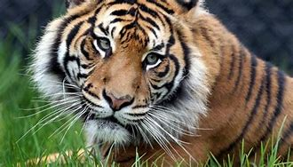

kibut atau binga bangkai raksasa atau suweg raksasa adalah tumbuhan dari famili talas-talasan endemik dari sumatra,indonesia yang di kenal sebagai tumbuhan dengan bunga majemuk terbesar di dunia.

setelah beberapa tahun mencari pasanagan untuk tumbuhan encrphalartos woodii ini tidak membuahkan hasil, ahli menduga jika yang ada saat ini merupakan species terakhir di bumi

harimau sumatra adalah populasi panthera tigris sondaica yang mendiami pulau sumatra, san satu-satunya anggota subspesies harimau sunda yang masi bertahan hidup